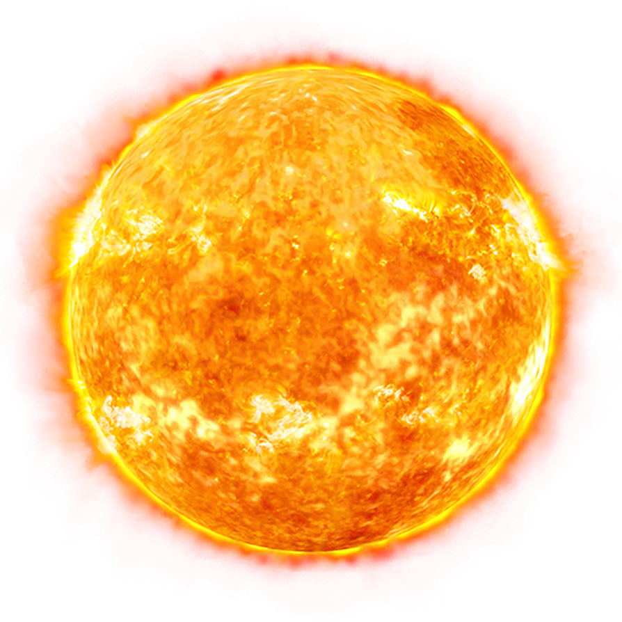
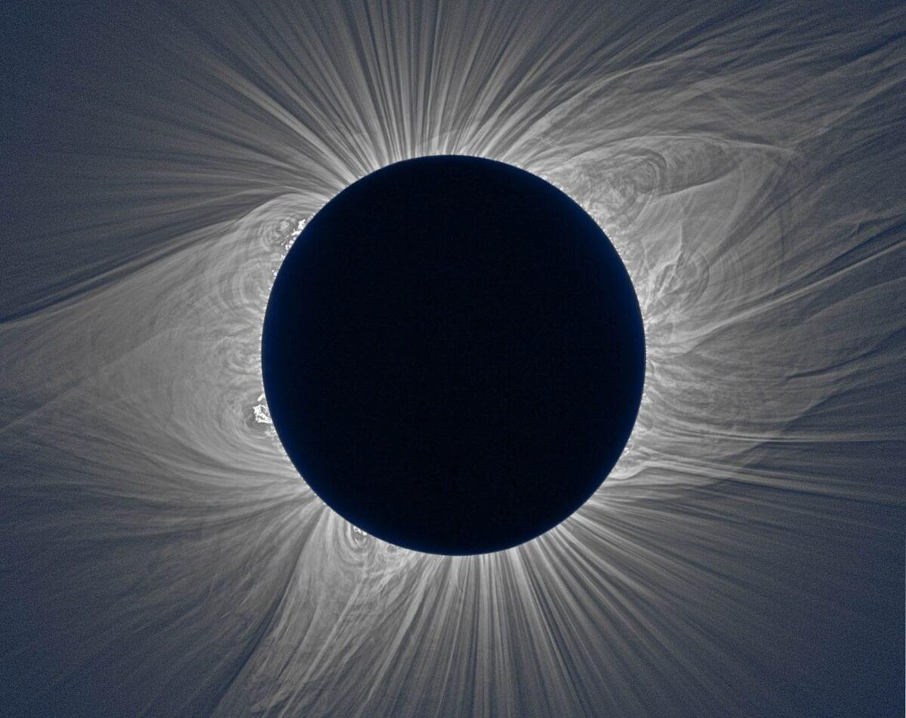
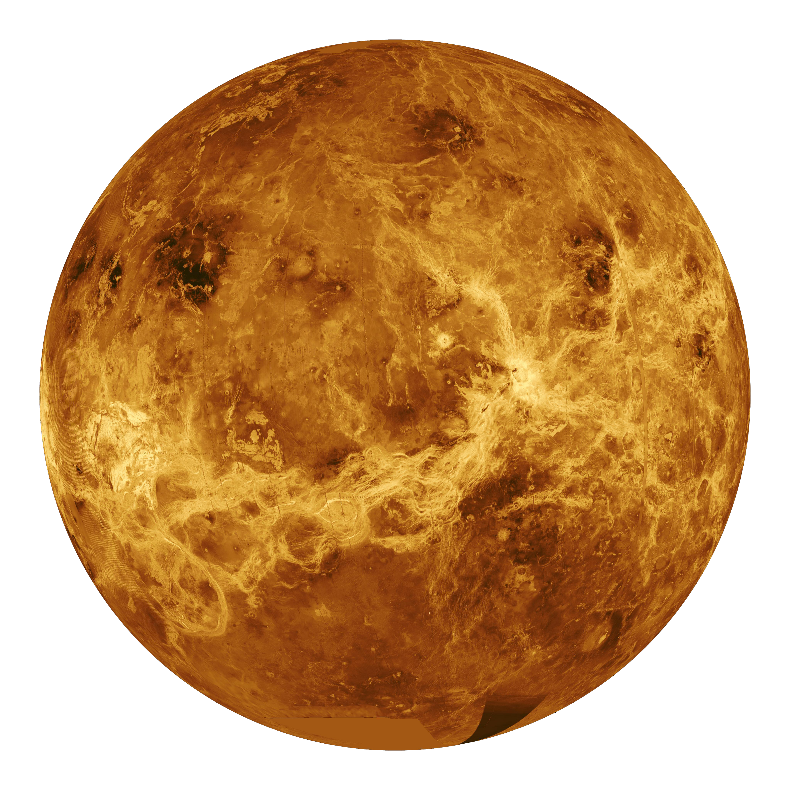

The Sun is a dynamic star, constantly changing and sending energy out into space. The Sun is located at the center of our Solar System and is the primary source of light and heat for all of the planets that orbit around it.
The Sun is the largest object in our Solar System, containing about 99.86% of the total mass, with a diameter of about 865,000 miles. Its gravity holds the solar system together, keeping everything within its influence from drifting away.
The hottest part of the Sun is its core, where temperatures top 27 million °F (15 million °C). The part of the Sun we call its surface - the photosphere - is a relatively cool 10,000 °F (5,500 °C). In one of the Sun's biggest mysteries, the Sun's outer atmosphere, the corona, gets hotter the farther it stretches from the surface. The corona reaches up to 3.5 million °F (2 million °C)
Our Sun is a medium-sized star with a radius of about 435,000 miles (700,000 kilometers). Many stars are much larger - but the Sun is far more massive than our home planet: it would take more than 330,000 Earths to match the mass of the Sun, and it would take 1.3 million Earths to fill the Sun's volume.
The Sun is about 93 million miles (150 million kilometers) from Earth. Its nearest stellar neighbor is the Alpha Centauri triple star system: red dwarf star Proxima Centauri is 4.24 light-years away, and Alpha Centauri A and B - two sunlike stars orbiting each other - are 4.37 light-years away. A light-year is the distance light travels in one year, which equals about 6 trillion miles (9.5 trillion kilometers).
The Sun is made up of several layers. The innermost layer is the core, where nuclear fusion occurs. Surrounding the core is the radiative zone, where energy slowly moves outward. Above that is the convective zone, where hot plasma rises and cooler plasma sinks. The visible surface of the Sun is called the photosphere, and above that are the chromosphere and the corona, which are part of the Sun's atmosphere.

The Sun's gravity keeps the planets in orbit. If the Sun suddenly disappeared, its gravity would no longer pull on the planets. The planets would continue moving through space in the direction they were already traveling.




The planets are orbiting normally.